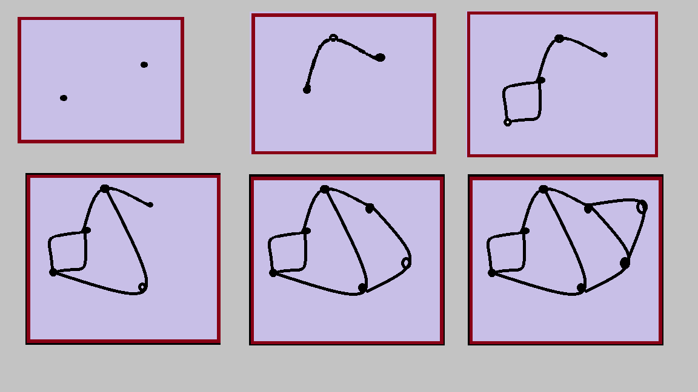

PLAY GUIDE
- The game is played by two players
- Players take turns, where each turn consists of drawing a line between two spots (or from a spot to itself).
- The line must be a curve and must not touch or cross itself or any other line. This is important to remember!
- A spot cannot have more than three lines leading to or from it.
- The idea is to make it impossible for the other player to draw a line.
- So the last person to draw a line is the winner.
